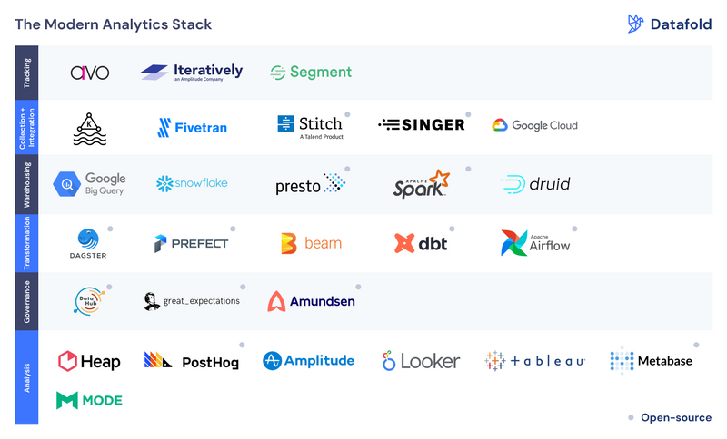

Modern Analytics Stack¶

Reference:
Data Value Chain¶
data process:
- Specifcation : defining what to track
- Instrumentation: registering events in your code
- Collection: ingesting & processing events
- Integration: adding data from various sources
- Data Warehousing: storing, processing and serving data
- Transformation: preparing data for end users.
- Quality Assurance: bad data = bad decisions
- Data discovery: finding the right data asset for the problem.
- Analysis: creating the narrative
- Observability: monitoring data assets, pipelines & infrastructure